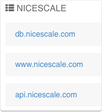
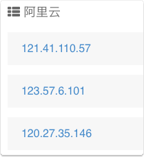
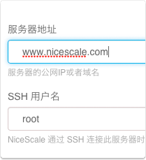
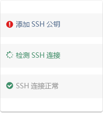
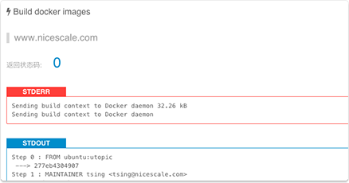
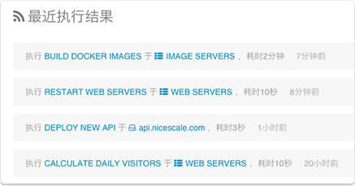

统一管理入口
将所有*nix服务器统一到一个入口下进行管理，无论是独立服务器、私有云还是公有云
 
快速配置部署
无需在您的服务器上安装任何软件，只需要服务器开启SSH服务
 
强大的批量执行
在大量服务器上并行执行，可快速获取每台服务器执行状态，和输出结果

完全透明
所有的操作都有记录，都可被追踪和审计

如何安装 Nicescale
仅需两条命令30秒，即可将NiceScale 搬回家, 详情参考 安装文档
售后服务
服务QQ：41309397
服务邮箱：support@nicescale.com
服务电话：010-62249349
他们正在使用Nicescale

NiceScale帮助我们将各种小脚本收拾整齐，并且完全可视化执行，管理一下清爽多了！
实际开发中，大量的开源软件的版本控制、相关配置文件管理，各业务、技术功能模块的部署，研发、测试、生产环境的同步都是运维痛点。NiceScale足够简单有效。
我们用NiceScale企业版管理客户的服务器，导入了很多以前的老脚本，运行很顺畅。
我们用NiceScale初始化测试环境，发布代码等， NiceScale 很方便，很简洁。